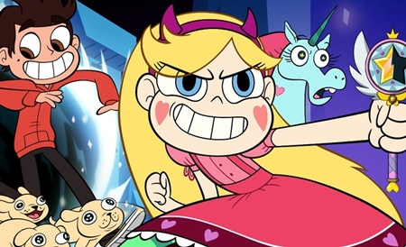
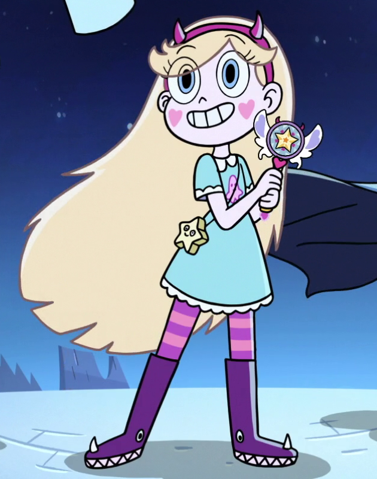

Sinopse:
Star Butterfly é uma princesa mágica da
dimensão de Mewni e herdeira do trono real de Mewni.
De acordo com a tradição, ela recebe a varinha de herança
da família em seu aniversário de 14 anos. Depois que ela
acidentalmente incendeia o castelo da família, seus pais
King River e Queen Moon Butterfly decidem que uma opção mais
segura é mandá-la para a Terra como estudante de intercâmbio,
para que ela possa continuar seu treinamento de mágica lá.
Ela faz amizade com Marco Diaz e vive com sua família enquanto
frequentava a Echo Creek Academy. Indo em uma série de desventuras
usando "tesouras dimensionais" que podem abrir portais, Star e
Marco devem lidar com a vida escolar diária enquanto protegem a
varinha de Star de cair nas mãos de Ludo, um vilão de Mewni que
comanda um grupo de monstros.
Autor: Daron Nefcy
primeiro Episódio: 18 de janeiro de 2015
Adaptações: Nenhuma
Gêneros: Aventura, Comédia, Fantasia Científica
| Temporada | Episódios |
| Temporada 1 | |
| Temporada 2 | |
| Temporada 3 | |
| Temporada 4 |
